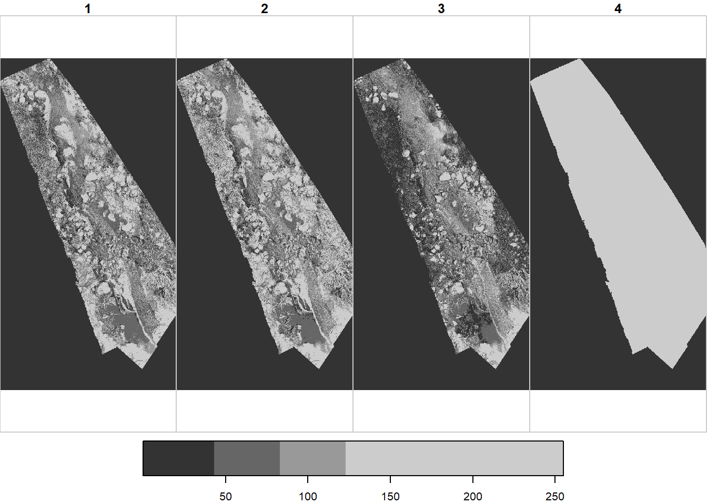
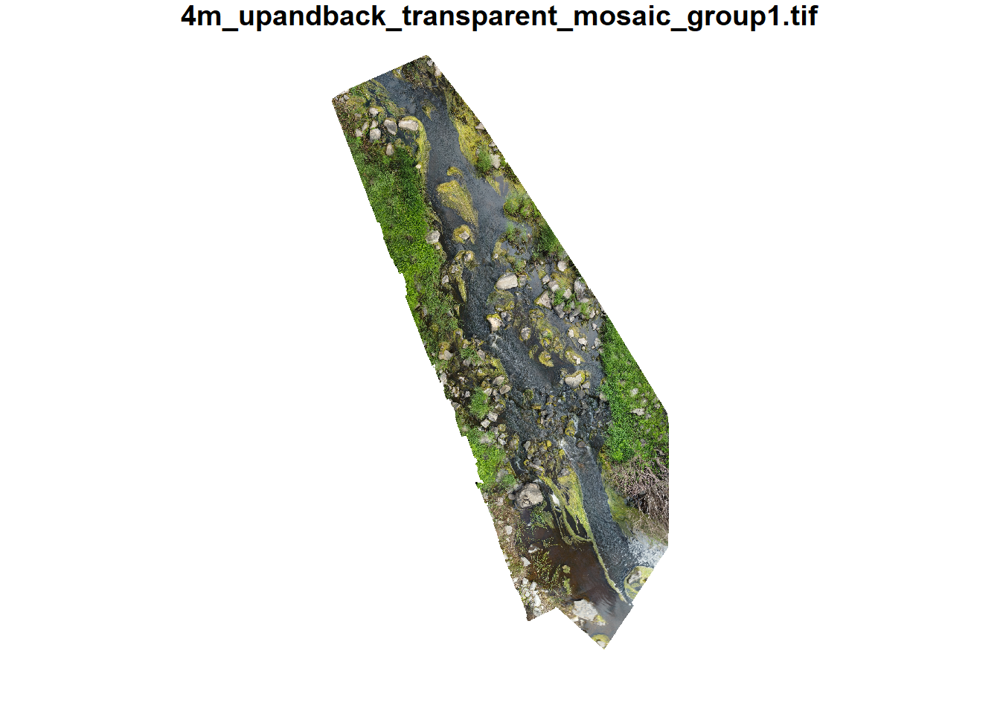
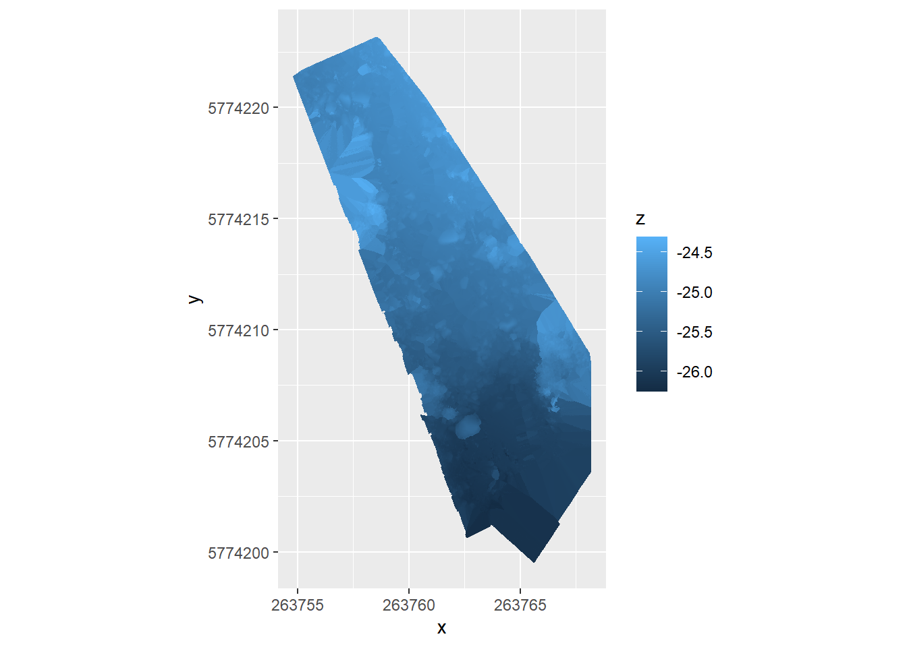
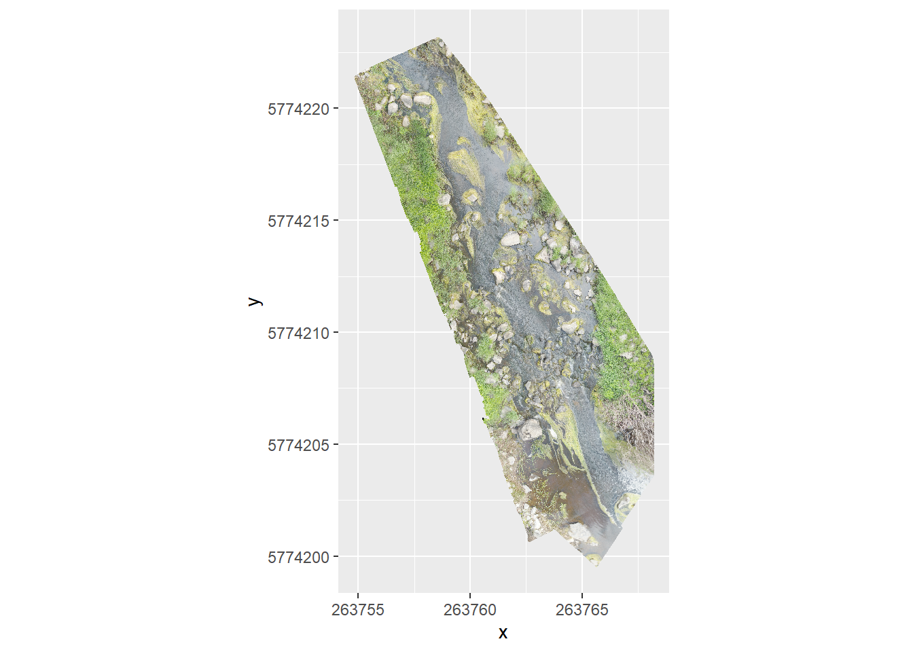
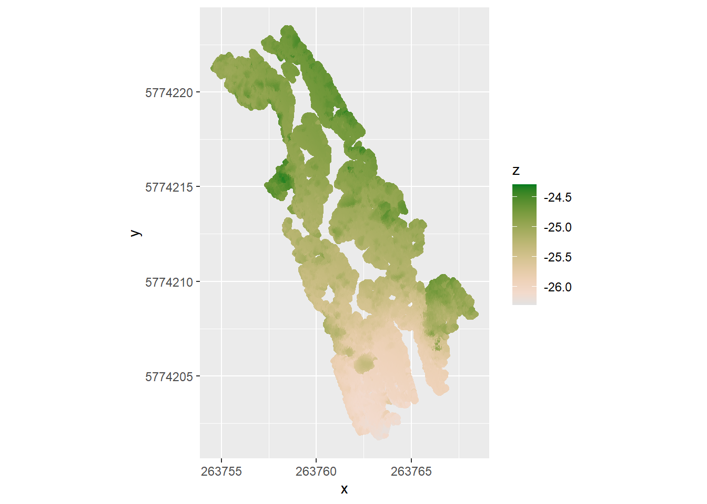
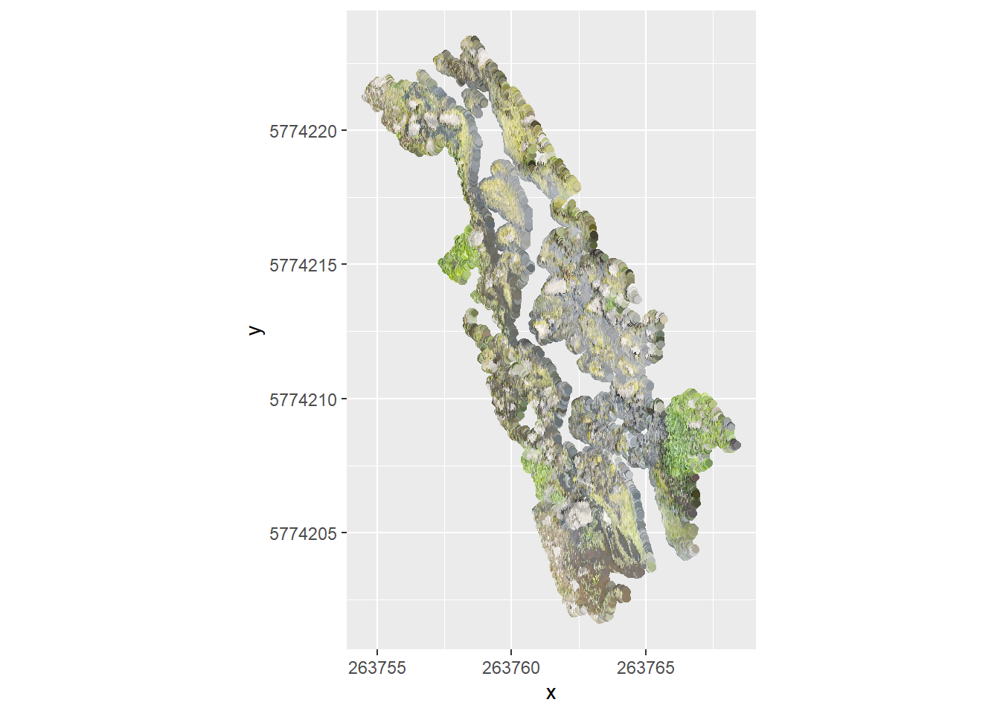

stars object with 3 dimensions and 1 attribute
attribute(s), summary of first 1e+05 cells:
Min. 1st Qu. Median Mean 3rd Qu. Max.
4m_upandback_transparent_mosai... 0 0 0 3.11974 0 234
dimension(s):
from to offset delta refsys point x/y
x 1 2416 263755 0.00556 WGS 84 / UTM zone 55S FALSE [x]
y 1 4546 5774223 -0.00556 WGS 84 / UTM zone 55S FALSE [y]
band 1 4 NA NA NA NA
4 bands. What are they? I expected rgb, and the 4th is uniform
useRaster = TRUE works here. BUt not in quarto? that’s weird. Set to false so it renders.
plot(ortho, useRaster =FALSE)
downsample set to 4

Color?
colmos <-st_rgb(ortho)
colmos
stars object with 2 dimensions and 1 attribute
attribute(s), summary of first 1e+05 cells:
4m_upandback_transparent_mosai...
Length:100000
Class :character
Mode :character
dimension(s):
from to offset delta refsys point x/y
x 1 2416 263755 0.00556 WGS 84 / UTM zone 55S FALSE [x]
y 1 4546 5774223 -0.00556 WGS 84 / UTM zone 55S FALSE [y]
plot(colmos)
downsample set to 1

Wow. That just worked. 4th band is likely alpha values.
Rows: 1490037 Columns: 6
── Column specification ────────────────────────────────────────────────────────
Delimiter: ","
dbl (6): x, y, z, r, g, b
ℹ Use `spec()` to retrieve the full column specification for this data.
ℹ Specify the column types or set `show_col_types = FALSE` to quiet this message.
assume the last 3 cols are rgb, use my function
dsm <- dsm %>%mutate(hexcol =rgb2hex(r,g,b))
Ignore spatial for a minute, can I just slam it in ggplot? using z as fill first. If we want the rgb, it’ll either be an orthomosiac or we’ll need to do something 3d with color overlay
dsmgg <-ggplot(dsm, aes(x = x, y = y, fill = z)) +geom_raster() +coord_equal()dsmgg

That was really weirdly fast.
Can I use the rgb to see the orthomosiac?
dsmorthogg <-ggplot(dsm, aes(x = x, y = y, fill = hexcol)) +geom_raster() +coord_equal() +scale_fill_identity()dsmorthogg

Would be cool to do a 3d map with color, maybe {rayshader}? Would really be nice to be able to rotate it etc.
That has color and height- might be good to feed to a ML algorithm to ID rocks using both sets of info and their relationships to each other.
Can I make it geographic (sf)? Assume the same crs as the dtm?
What about geom_sf on the point version? I plotted it above, but haven’t tried ggplot. This is more specifically what the point cloud is, below. Change everything to color from fill.
pc <- readr::read_csv(file.path(pcpath, paste0(projname,'_group1_densified_point_cloud.xyz')),col_names =c('x', 'y', 'z', 'r', 'g', 'b'))
Rows: 645290 Columns: 6
── Column specification ────────────────────────────────────────────────────────
Delimiter: ","
dbl (6): x, y, z, r, g, b
ℹ Use `spec()` to retrieve the full column specification for this data.
ℹ Specify the column types or set `show_col_types = FALSE` to quiet this message.
pc <- pc %>%mutate(hexcol =rgb2hex(r,g,b))
Like the dsm, I should be able to use ggplot directly. But here, the points are the points in the cloud, not the evenly spaced points of the dsm. So geom_raster doesn’t work. Could use geom_tile I guess, but it’s more appropriate to just use geom_point.
pcgg <-ggplot(pc, aes(x = x, y = y, color = z)) +geom_point() +coord_equal() + colorspace::scale_color_continuous_sequential(palette ='Terrain 2')pcgg

And the rgb for the ortho
pcorthogg <-ggplot(pc, aes(x = x, y = y, color = hexcol)) +geom_point() +coord_equal() +scale_color_identity()pcorthogg

We can make that an sf. Doesn’t make sense to make it a stars, since it’s points and not gridded. The DSM is techinically points, but they’re gridded so can go either way.
Ok, that all works. Need to clean it up and make a simple package.
To do
make a package. Have funs for xyz and funs for tifs. But call those within specific funs for each output (e.g. dsm and point cloud should have their own funs, and the DSM should allow returning a raster in addition to points, but pc shouldn’t). Similar for a standard set of plot returns
Can I get rayshader to work?
Would be cool to do height with z and color with hexcol to actually map the stream in 3d with photo overlay. Pix4d does it, but would be nice to do here too.
Why does the point cloud not include the water?
Does that make our lives easier in some ways?
Where is this stuff in space? is it in the right place?